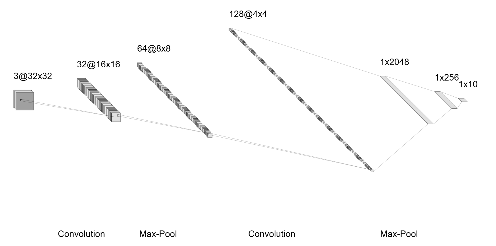
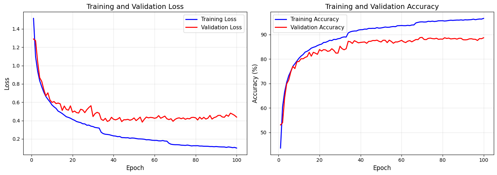
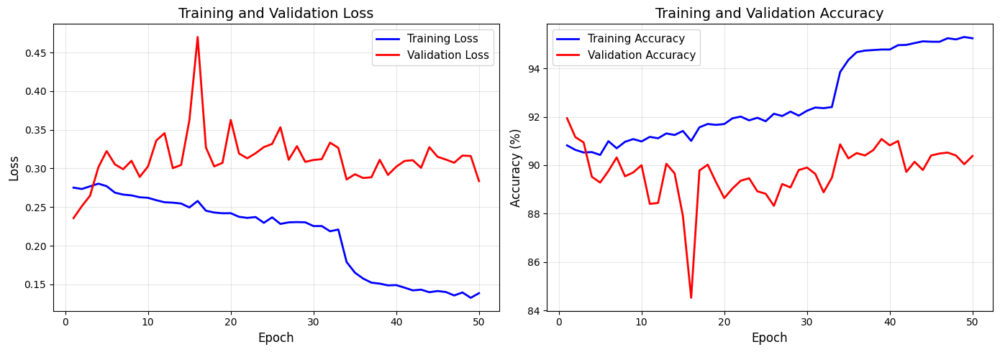
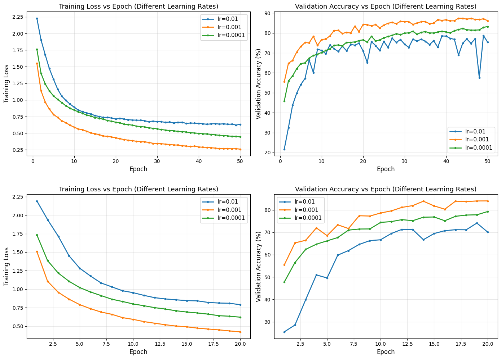

Hojung Lim · MASC 520 – Project 2 · USC Spring 2026

Figure 1: CNN architecture — three convolutional blocks (32, 64, 128 filters) with BatchNorm, ReLU, MaxPool, followed by FC layers (2048→256→10)
Each convolutional block contains two Conv2d layers (3×3 kernel, padding=1), each followed by Batch Normalization and ReLU, then 2×2 Max Pooling. Spatial dimensions reduce as:
Both training runs share: Adam optimizer (lr=0.001, weight_decay=1×10⁻⁴), CrossEntropyLoss, StepLR scheduler (step_size=33, gamma=0.5), random horizontal flip + random crop augmentation.
| Test 1 | Test 2 | |
|---|---|---|
| Starting Point | From scratch | 100-epoch checkpoint |
| Epochs | 100 | 50 (continuation) |
| Batch Size | 200 | 128 |
| LR Decays | 3 (×0.5 each) | 1 (×0.5) |
| Final Train Acc. | 96.6% | 95.2% |
| Final Val Acc. | 88.7% | 90.4% |
| Test Accuracy | 89.71% | 89.34% |

Figure 2: Training and Validation Loss (left) and Accuracy vs. Epoch (right) — Test 1 (100 epochs)
Validation accuracy accelerates after each LR decay: ~85% at epoch 30 → ~87% at epoch 35 → ~88.8% at epoch 70. The ~8% train/val gap indicates mild overfitting despite dropout and augmentation.

Figure 3: Training and Validation Loss (left) and Accuracy vs. Epoch (right) — Test 2 (50 continuation epochs)
Test 2 starts at a high baseline (epoch 1: 90.8% train, 91.9% val). Final val accuracy 90.4%, but test accuracy (89.34%) is lower than Test 1, suggesting mild overfitting to the validation split.
| Class | Test 1 (batch 200) | Test 2 (batch 128) | Change |
|---|---|---|---|
| Airplane | 91.7% | 93.5% | +1.8 pp |
| Automobile | 96.0% | 97.1% | +1.1 pp |
| Bird | 85.5% | 87.9% | +2.4 pp |
| Cat | 79.7% | 76.9% | −2.8 pp |
| Deer | 89.3% | 86.9% | −2.4 pp |
| Dog | 82.8% | 83.5% | +0.7 pp |
| Frog | 93.5% | 91.0% | −2.5 pp |
| Horse | 89.7% | 93.1% | +3.4 pp |
| Ship | 94.2% | 93.9% | −0.3 pp |
| Truck | 94.7% | 89.6% | −5.1 pp |
| Overall | 89.71% | 89.34% | −0.37 pp |
Cat and dog are the hardest classes (visual similarity). Automobile and ship are easiest (distinctive shape and color). Test 2 improves some classes but degrades others — additional training with smaller batch size does not uniformly help.

Figure 4: Training loss and validation accuracy vs. epoch for three learning rates (0.01, 0.001, 0.0001) — Test 1, 50 epochs (top) and Test 2, 20 epochs (bottom)
lr=0.001 consistently outperforms the other rates in both runs. lr=0.01 overshoots (76.8% / 70.1%), lr=0.0001 converges too slowly (80.9% / 79.3%). The ranking lr=0.001 > lr=0.0001 > lr=0.01 is consistent across both tests.